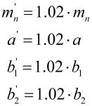

|
|
|


模具制造修形
当塑料齿轮采用注塑成型工艺制造时，材料在冷却过程中会收缩。为了抵消这一影响并制造精确的齿形，刀具的尺寸必须增加收缩量。根据所涉及材料的类型，收缩可能沿径向或切向发生。如果您在径向和切向方向输入相同的值，则应变将在所有方向上均匀。
如果齿轮是围绕镶嵌体注塑成型的，您还必须输入该体的外径。然后，径向应变将使用“镶嵌体外径”进行计算。
修形仅影响齿形的横截面。生成 3D 实体模型时，轴向不存在应变。如果您想创建斜齿齿轮的放大的 3D 模型（如果应变在三个轴上都相同），可以通过缩放模数 (mn)、中心距和齿宽来实现。
示例
在主界面中，将模数、中心距和齿宽按所需的应变系数增大。
系数 = 1.02

然后，在齿形计算中不要输入应变值。
这种修形还会使导程 pz 以相同的系数增大。但是，螺旋线在整个齿宽上的旋转角度保持不变。
常用值为：
- 径向收缩约 2%
- 切向收缩约 2%
Modification for mold making
When plastic gears are manufactured using the injection molding process, the material shrinks as it cools. To counter this effect, and manufacture precise tooth forms, the size of the cutter must be increased by the shrinkage amount. Shrinkage may occur either radially or tangentially depending on what type of material is involved. If you enter the same values in the radial and tangential directions, the strain will be uniform in all directions
If the gear is injection molded around an inlay body, you must also input the external diameter of this body. The radial strains will then calculated using the "external diameter of inlay body".
The modifications only affect the transverse section of the tooth form. No strain in the axial direction is present when a 3D volume model is generated. If you want to create an expanded 3D model of a helical toothed gear (if the strain is to be the same in all three axes), you can achieve this by scaling the module (mn), the center distance and the facewidth.
Example
In the main screen, increase the module, center distance and facewidths by the required strain coefficient.
Coefficient = 1.02
Then, do not input a value for strains in the tooth form calculation.
This modification also increases the lead height pz by the same coefficient. However, the angle of rotation of the spirals across the facewidth remains the same.
Usual values are:
- Radial shrinkage approx. 2%
- Tangential shrinkage approx. 2%